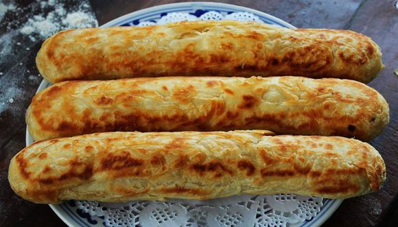
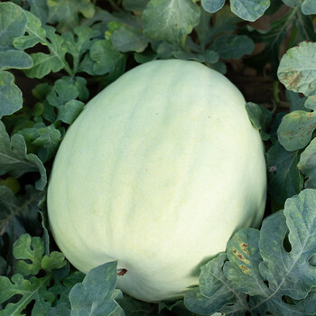

特色美食
威县美食文化源远流长，其中以威县火烧最为著名，是冀南地区的特色名吃。

威县火烧
威县火烧是邢台市非物质文化遗产，采用吊炉烤制，外酥里嫩，香酥可口，有肉馅、糖馅、菜馅等多种口味。
必尝美食

威县葡萄
威县葡萄种植历史悠久，品种繁多，以巨峰、夏黑、阳光玫瑰等品种最为著名，果粒饱满，甜度高，口感佳。
地理标志产品

其他特色
除火烧和葡萄外，威县还有吊炉烧饼、老豆腐、焖饼、八大碗等特色美食，各具风味，体现了冀南饮食文化的独特魅力。
地方风味